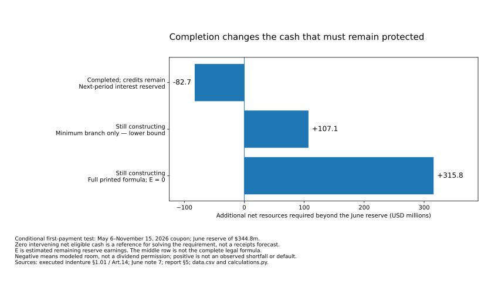

Is AI a Bubble?
Spending & obligations
Strong customers can keep paying while the build-out uses accumulated resources, changes distributions or raises new capital. Which spending can actually change?
Evidence dates and measurement boundaries
Can this money pay this bill, at this time?
A successful repayment or parent transfer can release capital while leaving new claims. Distinguish company funding, seller liquidity and creditor exit before treating any of them as operating income. The completed financing comparison.
Strong customers and real financing can support a useful build without making every resource freely available. Start with the entity owing the bill and the date it must be paid. Customer funding, group cash, restricted reserves and permission to borrow are different resources and rights. The favorable mechanisms are substantive; their timing and conditions determine which can actually be used.
For the related operating-cost question, renting compute makes the payment an operator cost and the host’s receipt—not two final revenues, or a reason to charge the same capital twice. The new service-cost explanation is a separate workload, not a cash allocation to these facilities.
Strong-payer protection is better supported than effortless funding or cheap cancellation. Microsoft and Meta have real operating resources, but complete lease payments, incurred bills and contract terms constrain flexibility. Oracle’s cash account shows a different mixture of customer advances and outside equity. Funding a purchase still does not establish that it earns an adequate return.
Follow the paying business as well as the protected supplier
The latest payer investigation reconciles actual annual and matched-half-year cash accounts, then tests conditional future budgets. It does not add unmatched corporate flows into an AI funding deficit. Operating cash is net of relevant costs and timing effects—not gross independently funded customer revenue. Actual sources and uses
Contractual schedule · Microsoft fiscal year ending June 2027
The shorter lease table misses part of the payment bill
On a narrow screen, scroll the figure horizontally.
The Microsoft funding budget starts from June 2026: $20.935bn cash plus $55.908bn short-term investments, less $3.8bn identified restricted investments, gives $73.043bn. A further $7.5bn of restricted investments is outside that pool and is not deducted again. New leased assets and current lease cash have different timing; the cash test restores historical lease deductions before subtracting the full future payment schedule once. Resources and the two accounting conventions
Under flat reference operating cash and investment, retaining program buybacks leaves $34.894bn of conditional fiscal-2027 ending resources; assuming no new program purchases leaves $51.613bn. The latter exceeds an illustrative $50bn buffer, but is not proof of a legally achievable budget. The full construction/purchase schedule needs at least $61.434bn of operating-cost overlap or effective timing/reduction adjustments for that spending capacity to work. That allocation is not established. Assumptions, favorable case and continuation
A favorable Microsoft case—20% higher net operating cash before leases and 10% higher investment—ends at $76.417bn without new finance or program buybacks. It shows that continued internal funding is feasible under specified conditions, not that cash growth or cheap cancellation has been observed. Additional payments and restrictions reduce the result.
For Meta, the second-half reference is the same half of the prior year. Completing the $145bn annual capital plan while retaining the assumed $50bn buffer needs $70.847bn of H2 operating cash, about 7% above the 2025 half. Carrying a $145bn capital bill into 2027 is a separate assumption, and continuation becomes materially more demanding. The earlier half-on-half sensitivity remains dated rather than being mistaken for this new test. Meta’s matched and continuation cases
For Oracle, operating cash includes $11.363bn of financing-component customer prepayments; $19.909bn of net equity proceeds is separate financing. Removing either source while keeping actual uses fixed reveals dependence, not a normalized cash flow or forecast without finance. Advances fund future service and cannot be collected again as it is delivered. Oracle’s full quarterly account
The IREN–Microsoft agreement also prevents a generic “cancel at convenience” shortcut: its negotiated amendment expressly disapplies the generic purchase-order termination clause. Specific performance exceptions, remaining payment obligations and delayed-service protection still govern. This is one contract finding—not a universal minimum-spending schedule. The document hierarchy
A retained customer is not yet a complete cash receipt
The new demand evidence supports real persistence and possible provider capture—not effortless financing. Freshworks' existing customers contributed additional recognized revenue and its quarterly operating result improved. Its first-half cash residual after property/equipment and capitalized software was nevertheless roughly flat, while adjusted free cash flow rose with larger paid-cost addbacks. Those measures answer different questions. Full cash bridge.
The payment chain also keeps costs in the right place. An application pays for hosting and model services from its receipts. Those purchased services are already in application expenses; they are not a reason to add the upstream provider's entire capital bill again. Conversely, inference cost alone omits product development, sales, administration and other expenses. Buyer → application → upstream services.
Company-wide retention is not an AI-product renewal rate, and recognized revenue is not the same thing as cash deposited in a project account. The favorable evidence should strengthen the commercial case without being substituted into another borrower's debt-service test. The protected contracts below retain their own payer, delivery and cash conditions.
Use Customer demand for the maintained buyer/provider explanation, and the dated September 29 investigation for its detailed accounts. The resource and commitment comparisons here retain their original dates and limitations.
The buyer’s saving is not a second supplier receipt
An outside buyer can purchase useful AI without expanding its total cash budget by the same amount. The correct comparison is the new external fee plus other incremental cash costs, less old payments actually avoided—not the fee plus every claimed internal benefit. The buyer-budget identity and cases.
Cash-budget identity · no currencies or case totals combined
Useful demand need not be additional spending
Scroll horizontally on a narrow screen to inspect the complete figure.
The council’s £48,000 signed annual extension establishes a purchase obligation; its recording/report allowances establish capacity. The attributed service improvement is another observation, and payment remains unverified. Automatic renewal, the later secondary broader award record and the original contract are not accumulated into duplicate obligations. More service at unchanged staffing need not release cash for another bill. Order, persistence and payment; capacity versus adjustable spending.
Klarna’s management-attributed $2.59m component of the first-quarter 2024 versus first-quarter 2023 external-supplier reduction identifies where a claimed benefit lies, not cash received by AI vendors or a full net saving. Tools, integration and internal review can absorb it. The 2024–2025 annual reconciliation—$328m + $28m referral growth + $58m remaining expense = $414m—is reported expense, not a cash waterfall; the issuer’s separately rounded $87m increase remains distinct. Quarterly periods and adjustments are not added to that annual series. Full expense reconciliation and unaccounted costs.
This strengthens the case for a buyer operating purpose outside immediate infrastructure financing, without tracing every invoice’s ultimate funding. The two cases do not identify cash available to Finance I or any other selected project. The completion matching account and protected-reserve tests below therefore remain separate and unchanged. What the buyer evidence does—and does not—connect.
Can the tenant, the host and the lenders use the same cash plan?
A financing can be real and useful without supplying new customer earnings. In the January–June 2026 accounts, CoreWeave and Core Scientific together had $12.163 billion of net operating-plus-investing outflows and $17.177 billion of net financing inflows. These matched sums explain funding during expansion—not an industry total, AI-only margin or pooled bank account. Their reported cash and the project borrower’s available cash are different perimeters. The actual reconciliations.
The new case follows CoreWeave’s hosting purchases through six Core Scientific facilities across five sites and their financing subsidiaries. Customer construction contributions and later fee credits change when money arrives. The same advance is not both an initial resource and untouched future rent. A cost already paid in the tenant’s operating cash is not deducted again as though that operating-cash figure preceded the payment. Assets, credits and who pays.
Evidence dates and result types
Three records—not one current forecast
Scroll horizontally on a narrow screen to inspect the full figure.
The April illustration’s combined tenant-credit/other-cost row permits a bounded allocation, not an invented exact invoice. In 2027, the indicated tenant transfer after credits is $1.045–1.346 billion, while the host’s pre-debt residual remains $284 million across the possible split. The range excludes separate construction and GPU costs; it is not a complete affordable minimum for the tenant. The bilateral identity and its limits.
Combining April’s operating path with the executed 7.75% coupon and June’s assumed November 2029 first installment produces $350.808 million of residual cash over 2027–2030. The modeled May 15, 2031 payment is $2,836.567 million, including the final coupon. Those are conditional calculations; the residual precedes omitted uses and distribution restrictions. No entire year of 2031 cash is placed before May.
With assumed future eligible opening resources of $344.8 million, assumed pre-maturity cash of $331 million and no extra omitted uses, retaining that residual leaves $1,809.958 million of additional net funding required. Distributing it instead raises the requirement to $2,160.767 million. The additional source could come from refinancing, equity, net realizations or returned parent capital; the calculation does not establish any commitment. The maturity funding test.
Refinancing need is not automatic failure. The supplied four-year case works at 10% plus a 2% fee with $600 million annually after all non-debt uses. It does not work at $450 million and 12% without a change: that path supports about $470 million less net funding than required. Different costs, eligible resources or financing may resolve the mismatch. None is assumed legally available merely because it balances the arithmetic. The feasible and adverse paths.
The earlier DDTL 4.0 full-amortization case is a different CoreWeave instrument, not a contradiction. GECC’s identified CoreWeave bond is also not a Core Scientific Finance I note. The holder map, collection accounts and guarantee scope must follow the actual instrument rather than a familiar company name. Financing and holder boundaries.
Match the vendor bill—and preserve what must stay protected
Eventual reimbursement is not the same as usable cash before a bill. The June $383.758m customer-funding receivable is matched by $302.183m accrued customer-funded construction and a rounded $81.6m payable disclosure. The implied $81.575m residual is arithmetic, not a separately reported exact payable. Core Scientific says it collects reimbursement before paying vendors. The account and its interpretation.
Observed amount · conditional payment ordering
The same matched bill can have a different cash bridge
Scroll horizontally on a narrow screen to inspect all labels.
This block is not free cash for another project, and its entire liability is not automatically a parent funding hole. The modeled $191.879m pay-half-first bridge is conditional on a different sequence, with full eventual reimbursement; it is not evidence of a late payment. Customer advances, construction receivables and future fee credits also need separate entries so that one receipt is not collected twice.
The group’s approximate $1bn future commitment bucket includes $264m passed through as invoiced, giving a $736m net-use reference under timely matching. That bucket covers more than Finance I. Incurred PPE bills and Polaris acquisition cash can be added only to the extent not already counted. The $120m Polaris escrow is already restricted; it must not be deducted again from unrestricted cash. Nested resource assumptions—not a new October balance.
Finance I’s particular post-Final-Commencement debt basket cannot itself fund the last work needed to reach that gate. It is conditional permission, not committed funds. Other debt permissions exist; this is not a blanket ban on precompletion borrowing. Completion support and some distribution exceptions also exist, without becoming a general parent guarantee of the notes. The actual milestones and claim perimeter.
Conditional first-payment comparison · USD millions
Completion changes the cash that must remain protected
Scroll horizontally to read the supplied figure at inspection size.

The reserve comparison asks for the first coupon plus the protection left afterwards. With June’s $344.8m only as a starting scale and zero intervening net eligible cash as a solving convention, the completed/credits-remain case has $82.656m modeled room, the construction minimum branch requires $107.094m, and the full printed formula with zero remaining earnings requires $315.825m. Room is not distribution permission; neither positive requirement is an observed shortfall. The disclosed reserve and full determination remain unreconciled. Full equations, alternatives and limits.
The vendor-order bridge and reserve results cannot be summed without matching entities, dates and overlap. They explain why retaining cash or using a permitted sponsor bridge can matter even when eventual customer payment is expected. A source that becomes available later does not retroactively pay an earlier invoice.
Start with comparable cash, not a sum of announcements
Property-and-equipment purchases are cash paid for long-lived assets such as buildings and servers. The comparison below covers the whole parent companies, not only AI, and uses the same 1 July 2025–30 June 2026 window. It does not add model revenue, cloud sales, chip sales, financing rounds and multiyear commitments into a fictitious “AI money” total.
Matched-period comparison · every bar starts at zero
Large operating inflows—and a large investment bill
Scroll the figure sideways to see the full diagram.
| Parent | Operating cash flow | Cash PP&E | Limited difference |
|---|---|---|---|
| Microsoft | 182.935 | 115.948 | 66.987 |
| Alphabet | 185.675 | 132.402 | 53.273 |
| Amazon | 161.403 | 173.028 | −11.625 |
| Meta | 130.301 | 89.325 | 40.976 |
| Bounded total | 660.314 | 510.703 | 149.611 |
Microsoft supplies a fiscal year and Amazon a trailing year. Alphabet and Meta are reconstructed as calendar 2025 plus January–June 2026 minus January–June 2025. Source-linked inputs and calculations preserve that bridge.
The last column is not company-defined free cash flow or an AI-project return. It leaves out finance-lease principal and other uses such as acquisitions, equity investments, debt repayment and dividends. Operating-lease payments already affect operating cash flow. Noncash lease additions are not purchases paid in the period.
Amazon’s own trailing free-cash-flow reconciliation adds $4.021bn of property-sale proceeds and incentives to the gross-purchase subtraction, giving −$7.604bn rather than −$11.625bn. Different definitions explain the difference; neither number is an estimate of AI-only loss. Amazon reconciliation.
A shorter period inside the year changes the comparison
Reported cash inputs and reconstructed windows · USD billions
A half-year inside a year—not a second spending bill
Scroll the figure sideways to see the full diagram.
The January–June comparison puts cash purchases at $294.800bn against $322.486bn of operating cash. The remaining $27.686bn is the same limited subtraction, not money freely available after all claims. Spending 91.4% of operating cash on these purchases does not mean imminent default: reserves, borrowing, new equity, lease financing and future receipts also matter. It does reduce room for other uses without additional funding.
A newer inspection date must not turn these June-ended accounts into a complete September cash balance. Exact half-year table and financial boundaries.
Cash, leased assets and future promises belong in different columns
A lease can deliver an asset before most of its cash payments occur. Adding the asset recognized at inception to the period’s principal payments and calling both “cash spent” mixes stages. A lease not yet commenced is another category again.
Microsoft disclosed $329.1bn of leases not yet commenced at 30 June 2026. That is substantial future exposure, not that amount already paid or borrowed. Its change in estimated building and data-center life from 15 to 25 years, effective in fiscal 2027, affects accounting and prospective lease classification—not the economic life of accelerators. Management said the physical investment expectation was unchanged. Lease disclosure; accounting explanation.
Forecasts also retain their own definitions. Alphabet’s $195–205bn calendar-2026 capex outlook, Microsoft’s approximately $175bn discussion and Meta’s $130–145bn range are not automatically comparable; Meta includes finance-lease principal. They are not cash receipts or payments already observed. Guidance sources and qualifications.
Almost funding the equipment bill is not recovering the whole investment
The IREN–Microsoft deployment shows why the spending boundary must be set before a financing headline is interpreted. The original $5.8bn GPU/ancillary budget excludes $2.8–3.2bn of data-center construction. At the combined $8.8bn midpoint, covering almost all the equipment bill would still leave a substantial facility investment. Budget components and exclusions.
| Amount or status | Disclosed boundary | What not to infer |
|---|---|---|
| $3.645bn | A $1.545bn loan facility plus up to $2.1bn of notes, with funding conditions | Not $3.645bn already drawn or unrestricted |
| $0.938bn at 30 June | Reported $0.413bn loan funding and $0.525bn notes issued; escrow conditions apply | Not a complete September available-cash balance |
| $1.93284bn | Contractual customer advance; part of $9.66420bn tranche fees, credited against later bills | Not verified receipt or extra revenue |
| $5.57784bn at complete funding | Commitments plus contractual advance: 96.17% of the equipment budget | Not 96.17% of the combined investment recovered |
| $3.22216bn | Other gross funding needed against the $8.8bn midpoint, before fees, reserves and other uses | Not a current cash shortfall; parent resources or other financing can supply it |
The customer contract and the lender’s calendar need separate treatment. Dell’s original purchase terms call for payment within 30 days of shipment; customer acceptance and collections can follow later. The service contract extends end dates to preserve aggregate fees after a delayed start. The notes have acceptance-adjusted amortization but also an outside maturity date of December 31, 2031. A customer extension is not automatically a lender amendment.
The 5.96% note coupon, SOFR-plus-2.25% loan spread, reported 6% weighted financing claim excluding fees and effective accounting rates are different measurements. Debt draws can fund construction; they are not customer revenue or investment profit. Interest and principal belong in a dated financing model, not a second deduction from an all-capital discounted-return model. Contract sources and the two cash clocks →
A creditor’s legal claim is not a measured recovery value
Qualitative legal/economic map · not a loss estimate
Two financing structures, two different claims
Scroll the figure sideways to see the full diagram.
Meta issued $25bn face amount of parent senior unsecured notes in May 2026, with about $24.910bn net proceeds, fixed coupons of 4.55–6.45% and maturities from 2031 to 2066. Repayment is supported by the parent’s resources rather than one GPU fleet’s receipts. That can make debt resilient even when a particular investment earns a poor return. Meta debt note.
CoreWeave’s $8.5bn DDTL 4.0 ceiling is not cash already borrowed. The named borrower, CoreWeave Compute Acquisition Co. VIII, LLC, reported $2.837bn principal at 30 June. Borrower collateral and contractual cash rights support the debt; its parent guaranty covers defined conduct-related obligations, not every ordinary operating shortfall. Other group facilities have different protection. June principal; guaranty.
Start with the repayment source rather than the GPU resale price. DBRS’s 3 April credit analysis identifies Meta’s take-or-pay capacity contract and expects full amortization without refinancing or re-leasing. The facility’s final maturity is 31 March 2032, but monthly amortization is intended to retire it earlier through its life. This is underwriting, not a current borrower cash certificate. The confidential MSA and monthly model remain unavailable.
The 1.15× contractual coverage test starts after the applicable commitment-termination trigger and transition periods. Its debt-service definition excludes the initial special amortization payment and final bullet. That exclusion means the covenant alone does not establish full repayment; it does not establish that a material balloon is expected, given the full-amortization design. Definitions and §6.12; the full-amortization countercase.
A dated principal schedule and a separately confirmed closing
| Scheduled period | Principal |
|---|---|
| Remaining 2026 | 4.413 |
| 2027 | 6.184 |
| 2028 | 4.416 |
| 2029 | 2.421 |
| 2030 | 3.221 |
| Later years combined | 14.896 |
| Total | 35.551 |
$10.597bn, or 29.8%, was scheduled through 2027 at June 30. The earlier March share was 46.6% of $25.149bn principal. A shorter remaining year, changed borrowing and a larger denominator prevent calling the percentage decline pure deleveraging. Cash statement and schedule boundary.
Completed financing · not operating cash generation
The face amount is not the cash left for investment
On a narrow screen, scroll the figure horizontally.
The September 18 $3.7bn pricing estimate and $3.1457bn prospective cash after capped calls remain in the dated financing investigation. The later closing is $4.2bn including the exercised option. The current report, not the passage of September 22, establishes this change. Neither set of figures reconstructs all post-June draws, repayments, construction, fees and cash restrictions.
First-half operating cash of $3.663bn less $14.117bn property/equipment purchases and $5.219bn actual principal payments leaves a −$15.673bn historical residual. Some repayments refinance previous borrowing; the residual is not a recurring default forecast. Current transaction and owner-claim consequences.
Cash can arrive and still be unavailable for another obligation
Contractual sequence · amounts not to scale
A collection is not yet distributable cash
Group operating cash is not DDTL 4.0’s eligible deposited customer cash. Advance payments help finance construction but also commit future service; recognizing that revenue later does not create a second receipt. CoreWeave’s deferred-revenue balance rose $1.507bn, while its cash-flow adjustment was $1.365bn. Neither is a disclosed project-by-project gross collection total.
A payment analysis also must avoid double-counting interest. First-half operating cash already deducted $0.806bn of expensed cash interest. Adding that back, then deducting principal and total interest including $0.176bn capitalized, leaves −$1.732bn before non-interest property/equipment cash purchases. Deducting those $13.941bn purchases produces the same −$15.673bn residual—not a new loss added on top.
Sources: CoreWeave June 2026 Form 10-Q.
For a matched three-month period, the conditional collection test is C ≥ K + 1.15 × (I + A + H): net eligible customer cash must cover prior costs K plus the contractual cushion on included interest, principal and hedges. Actual costs and installments remain missing; reserves and excluded payments need separate cash tests. See the grounded threshold and cash-only reserve bound.
Defined cure rights may restrain acceleration while further advances need not be made. A blocked distribution or a funding pause can be important before enforcement. New sponsor money used for a cure is not additional independent customer demand. §7.03 cure provisions.
A service that survives can still owe rent, credits and debt service
The older-capacity evidence adds a specific limit to treating continued use as unrestricted owner cash. Core Scientific’s Austin hosting operation holds a headlease, not free perpetual ownership. Its historical fee-minus-rent spread precedes other costs. The finite expense-based budget has a March 2025 anchor and already includes rent; it is not a current balance or permission to abandon the lease. Austin’s rights and costs.
In the later colocation portfolio, deferred revenue reconciles in H1 2026 as $553.878m + $181.149m cash received − $58.710m billed/earned − $24.029m noncash straight-line adjustment = $652.288m. The noncash line is earned base fees not yet billed, not another cash receipt. Customer-funded construction can ease financing while reducing later cash collections through credits; the same advance cannot be collected twice. Portfolio reconciliation and source.
The June filing reports assignment of certain license agreements to an indirect CoreWeave subsidiary while CoreWeave remains a primary obligor. That preserves a payment connection; it is not an independent replacement tenant or universal right to transfer the entire operating package.
Core Scientific Finance’s later $3.3bn secured note issue and $344.8m restricted debt-service reserve show claims on continuing service. Their scope is not Austin alone, and that entire financing is not subtracted from the earlier site budget. Payment timing linked to rent commencement and credit abatement is favorable funding design—not proof that all residual service cash belongs to equity. Who can receive the continuing value.
Cash raised, cash restricted, cash left for owners
IREN’s June accounts locate $1.724bn restricted cash in the Microsoft financing subsidiary, $1.128bn payables/accruals and $1.013bn deferred revenue. The last amount is used as a dated allocation proxy in the forward model, not a verified September phase-receipt ledger. A separately disclosed $1.623480bn consolidated lease advance is not all assigned to Microsoft. This is deeper June-note reconciliation, not a new September payment. IREN annual filing.
Distribution conditions govern which collections can leave the project after service, financing and reserves. Sponsor reimbursements have separate permissions. A project receipt therefore need not be a dividend; equally, the contract does not impose an unconditional ban on every parent transfer before all phases finish. Common Terms Agreement.
Remaining construction appears once, and a new drawing creates both cash and debt. The $2.707bn then-undrawn portion of the $3.645bn package is conditional funding, not free operating value. Likewise, a primary equity issue supplies company cash while reducing existing holders’ fraction; percentage dilution alone is not automatic wealth destruction. Funding, priority and the owner bridge.
The latest ATM shares/proceeds repeated in IREN’s August update were already disclosed at June. They are not another $2.5bn to add to cash. Earlier data files remain frozen to their original evidence boundaries.
A refinancing can repay one creditor and leave another claim
The old bridge’s exit is an actual financing success, not evidence that operations supplied the repayment. Core Scientific’s June 2026 accounts expressly confirm that Finance I used note proceeds for a reserve and a distribution to the parent, and that the $1bn bridge was repaid in full on May 6 with accrued interest and fees. No bridge obligation remained at June 30. The parent transfer is not a dividend to public shareholders. Completed event and recipients.
Completed transaction · allocation amounts partly unresolved
A creditor exits while a new creditor takes the claim
Scroll horizontally on a narrow screen to inspect the complete figure.
The executed Issue Date distribution permission in §4.05(b)(13) is distinct from ongoing, completion-dependent restricted-payment routes. It explains why this particular transfer did not have to wait for Final Commencement. It does not make later reserve or operating collections freely distributable, and it does not change the separate completion-gated debt basket discussed above. Permission at closing versus later cash rights.
What can be reconstructed—and what remains assumed?
The notes’ $3.3bn face at 99.25% supplied $3.27525bn before fees. The $24.75m discount is not another cash receipt or immediate lender profit. The new allocation identity deducts closing cash fees, the actual closing reserve, the $1bn bridge principal and all other uses before the net-parent boundary. The latter include bridge interest, additional issuer retention and other expenses.
| Item | Reference amount | Evidence status |
|---|---|---|
| Issue-price cash | 3,275.250 | Completed terms, before fees |
| Cash fees | −42.000 | Assumed equal to recorded issue costs; cash timing unresolved |
| Closing reserve | −344.800 | Proxy equal to June’s remaining stock, not an observed May deposit |
| Bridge principal | −1,000.000 | Actual repayment |
| Other uses | 0 reference | Excluded for the calculation, not actual zero; interest and fees were paid |
| Net-parent reference | 1,888.450 | Conditional remainder, not observed distribution, profit, available cash or measured bound |
Every additional dollar used before this boundary reduces the reference by a dollar. Different actual cash fees or closing reserves can move it either way. The $1.88845bn therefore is not a measured upper or lower bound. It must not be added to consolidated cash: the parent transfer is eliminated on consolidation. Full reconciliation, precision and missing allocation.
The new creditors retained a secured promise against the defined assets and rights. The parent retained specified completion support, with the Austin exception—not a general note-principal guarantee. The new nominal coupon is not proven cheaper than the old floating bridge: 7.75% equals SOFR plus 2.50% only at an assumed 5.25% SOFR. That is a comparison threshold, not an observed rate. Longer tenor and fixed-rate certainty provide a serious favorable explanation without inventing a saving. Continuing claims and rate comparison.
Do not count the same cash twice across transaction types. CoreWeave’s secondary tender receipts paid sellers, not the issuer. The IPO’s primary cash funded the company. Customer-contract shares issued without cash are another category again. A financier, employee, founder group and operating company need their own account before a return or funding statement is made. The completed equity comparison.
Linked financing can be real commerce and shared dependence
Amazon’s filing reports $50bn invested in OpenAI across $15bn in the first quarter, $13.7bn in the second and $21.3bn after June before the filing. This payment evidence had already been corrected in Cash, commitments and capacity. It is investor-reported funding, not a direct inspection of the recipient’s bank account or independent customer revenue. Amazon investment note.
The Amazon–Anthropic relationship separately includes investment, a remaining conditional facility ceiling of $15bn after the specified $5bn Series H reduction, and Anthropic’s announced commitment to buy more than $100bn of AWS computing over ten years. Milestones govern facility availability. A ceiling is not an available balance, a drawing or a payment. Facility disclosure; purchase commitment.
Such partnerships can secure useful capacity and share commercial upside. Their vulnerability is common dependence on the same eventual customer cash: an investor’s stake, its customer’s ability to purchase and a new facility’s utilization can disappoint together. The existence of that relationship does not establish sham services. The unresolved test is persistent outside-funded net payment and cash conversion. Repeat purchasing and its limits.
Keep an obligation separate from verified receipt
NVIDIA’s PORTS-Pike arrangement is phase-dependent residual-value support, with a disclosed main ceiling of $105bn for the initial 4.25 GW and lease commencements expected from 2028. It is not cash already paid, expected loss, or an unconditional promise to pay every missed invoice. An additional 3.8 GW option is separate. NVIDIA 17 August current report.
NVIDIA entered into a $1.5bn prepaid-forward contract with Energy Global, LP. The agreement requires payment within three business days after its date. The documents inspected for this investigation do not verify receipt.
This is an evidentiary correction, not a finding of nonpayment. Keep the forward apart from the separate $1.5bn offering-linked subscription and from contingent credit support. Contract, section 1(f); exact correction and consequence.
The filed lease and guaranty forms add delivery and ready-for-service gates, notice/cure, reserves, and alternatives to immediate settlement such as assumption, re-letting or specified deferral. Lawful rent abatement for delivery or power failure is not automatically default. The main loss formula and phase values remain redacted; the headline cannot be turned into a current all-in cash call. A landlord can need interim funding even if support eventually pays. Lease form; guaranty form; the support and reimbursement path.
26 September ownership review: reported SB Energy marketing postponement does not cancel the distinction between the forward, IPO-linked subscription and conditional support. The subscription’s primary-proceeds condition and closing still govern; neither a registration filing nor secondary share sales creates that cash. Current offering stages and unchanged receipt correction.
A value mark is not the same cash event as a valid support call. The holder investigation keeps NVIDIA’s January share record separate from its July resources and phase-dependent support. In a stated illustration, a $10 billion gross call followed by $4 billion of delayed net recovery requires $10 billion at the peak, not merely the $6 billion nominal net outlay. The call is assumed—not activated—and neither amount is added to the lifetime ceiling as another loss. Cash timing and the operating-company countercase.
A large parent can absorb poor returns—within limits
The September 27 payer analysis is now the fuller test of this resilience. Its scenario budgets distinguish seasonally matched cash, full lease schedules, restrictions and the continuation into another year. The earlier numbers below remain at their original assumptions; they are not a second, additive liquidity source. Compare payer cash and spending flexibility
Meta’s existing operating business is both the resilience comparison and the payment base behind the selected take-or-pay contract. A bounded second-half sensitivity starts from approximately $90.260bn of June cash and marketable securities. It retains the $130–145bn annual capex guidance, including finance-lease principal, assumes either flat OCF or a 30% fall from the first half, repeats $11.403bn of RSU-tax/dividend uses, and assumes no new financing.
The residual is $63.863bn in the flat-OCF/lower-capex case and $29.637bn in the lower-OCF/higher-capex case, after only the modeled uses. This supports a serious containment case, not a full cash forecast or proof of AI returns. Every scenario consumes some starting liquidity. Restricted escrow is already outside the starting pool; May borrowing is already inside it.
Sources: Meta second-quarter results; Meta June 2026 Form 10-Q.
Not all spending can simply stop: Meta reports substantial non-cancelable contracts and future leases. Those commitments overlap future operating and capital expenditures and must not be subtracted a second time without a mapping. Inspect all four cases, exclusions and fixed-commitment boundaries.
The holder of the loan has its own funding constraints
A bank that arranged a loan is not necessarily the institution still exposed to it. The new investigation follows Great Elm Capital Corp. (GECC), a closed-end investment company that discloses its holdings and its own creditors. At June 30 it held five identified CoreWeave-related loan, bond and fund interests with $23.311 million fair value, compared with $110.418 million net assets. This is 21.1% of its shareholder capital, not an estimate of all private-credit exposure. Five instruments, with face, cost and fair value kept separate.
This is a different loan set from the DDTL 4.0 case above. The disclosed secured borrowers are Co. II, Co. IV and CoreWeave Financing DDTL V. They have their own collateral and parent-support terms. GECC is not identified as a DDTL 4.0 lender and does not inherit its Meta-specific payment protection. A first-lien description establishes priority in the defined package, not a guaranteed recovery. Scope of the accessible-holder comparison.
Explanatory diagram · boundaries matter
Capital, borrowing permission and cash are not one cushion
Scroll horizontally when needed to inspect the labels.
Patient shareholder capital is genuine protection. Selling an ordinary GECC share on an exchange changes its owner; it does not make GECC redeem the share for cash. Reported cumulative cash distributions of $9.5 million from its CoreWeave-related equity investment, against $6 million originally invested, also demonstrate realization—not only an unrealized gain. But those past receipts cannot be added to June cash or subtracted from the still-retained $6.147 million fund interest to make it risk-free. The favorable evidence and its cash boundary.
Its creditors impose separate tests. The bank agreement specifies a minimum of $80 million net assets, general and bank coverage conditions, plus collateral eligibility and a borrowing base. The June $11 million draw sits inside a $50 million commitment, but the unused $39 million is not unconditional available cash. A borrowing-base deficiency has prompt repayment or cash-deposit alternatives, with a maximum 15-day cure period. Controlled accounts and other claims matter. The actual restriction-to-payment mechanism.
The cash illustration is deliberately narrower than the legal mechanism. If a future valid borrowing base were $8 million against the frozen $11 million draw, the deficiency would be $3 million. Paying it entirely from the $5.635 million cash/money-market pool would leave $2.635 million before other uses. Neither the $8 million base nor permission to use the whole pool is established. June investment-purchase payables of $5.340 million and about $6.1 million of unfunded commitments are relevant, but are not all assumed due in those 15 days. The conditional cash cure.
The funding clock can also precede the note’s final date. From November 1, 2028, outstanding GECCI principal enters the bank’s defined coverage denominator. The revolver has a March 31, 2029 springing maturity if GECCI has not been refinanced; GECCI matures April 30. At frozen June amounts only, the 300% test needs $202.5 million of qualifying numerator once $56.5 million GECCI joins the $11 million draw. This is not cash due or a projected 2028 balance. The amended latest revolver date is June 8, 2029, subject to the earlier condition. Dates and frozen-balance mechanics.
The consequence for the build-out is not automatically a creditor default. A holder may retain earnings, reduce distributions, collect principal or refinance in an orderly way. If those adjustments fail, sales at a discount can reduce capital again, and less new lending can reach borrowers before the holder’s own creditors lose money. The current certificate and a complete lender network remain unavailable. Containment and amplification, step by step.
Who can lose even while AI remains useful?
Customers may continue to benefit while providers earn less per task. Shareholders can absorb poor investment returns or dilution without a debt default. A thinly capitalized borrower can lose service receipts while interest and lease payments remain due. Lenders may enforce collateral, but its resale value, location, customer contracts and competing hardware determine recovery.
A stronger parent may absorb a project loss; a guarantee can transfer some loss under specified terms. The new holder investigation supplies one measured set of retained positions and its funding restrictions. Wider transmission still needs evidence of common exposures, funding withdrawal and cash demands across additional holders. It cannot be inferred by multiplying GECC’s percentage by all private credit. What this evidence can—and cannot—generalize.
The next link is economic rather than contractual: what annual cash and earning life would recover the investment?
For DDTL 4.0, the favorable case repays from contracted service—not liquidation. If that cash fails, a separate conditional recovery test uses its actual June principal and rounded book collateral. It is not the earlier hypothetical investment cohort or an observed GPU resale value. Collateral thresholds and ultimate-holder limits explain the backup and why origination roles do not identify current loan holders.
An operating site can remain useful after its first GPUs no longer command the original price. Net recovery then depends on transferable power and leases, compatible cooling, service continuity, replacement equipment and the next customer. The physical recovery investigation tests continuation rather than assuming a forced sale or treating book assets as cash. Its IREN thresholds do not revalue CoreWeave’s collateral.